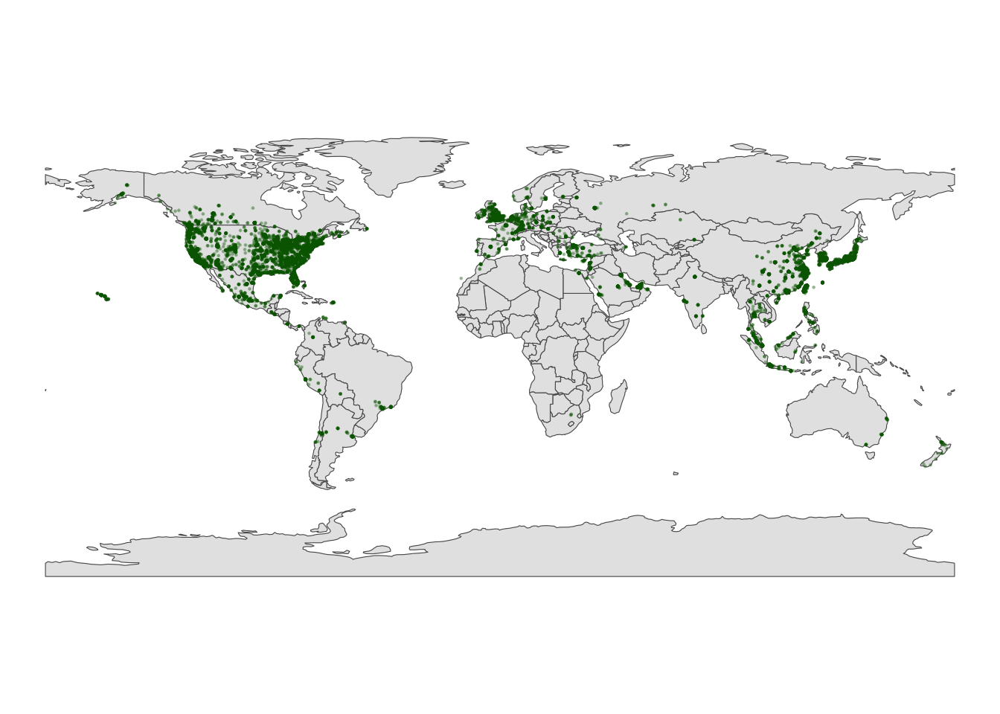

12 Spatial Viz
Use this file for practice with the spatial viz in-class activity. Refer to the class website for details.
── Attaching core tidyverse packages ──────────────────────── tidyverse 2.0.0 ──
✔ dplyr 1.1.4 ✔ readr 2.1.5
✔ forcats 1.0.0 ✔ stringr 1.5.1
✔ ggplot2 3.5.1 ✔ tibble 3.2.1
✔ lubridate 1.9.4 ✔ tidyr 1.3.1
✔ purrr 1.0.2
── Conflicts ────────────────────────────────────────── tidyverse_conflicts() ──
✖ dplyr::filter() masks stats::filter()
✖ dplyr::lag() masks stats::lag()
ℹ Use the conflicted package (<http://conflicted.r-lib.org/>) to force all conflicts to become errors# Import the data and only keep 2 addresses
energy <- read.csv("https://mac-stat.github.io/data/MacNaturalGas.csv") |>
mutate(date = as.Date(paste0(month, "/1/", year), "%m/%d/%Y")) |>
filter(address != "c")
# Check it out
head(energy) month year price therms hdd address renovated date
1 6 2005 35.21 21 0 a no 2005-06-01
2 7 2005 37.37 21 0 a no 2005-07-01
3 8 2005 36.93 21 3 a no 2005-08-01
4 9 2005 62.36 39 61 a no 2005-09-01
5 10 2005 184.15 120 416 a no 2005-10-01
6 11 2005 433.35 286 845 a no 2005-11-01ggplot(energy, aes(x = therms)) +
geom_histogram() +
labs(x = "Range and Typical Energy Used Each Month") +
theme_minimal()`stat_bin()` using `bins = 30`. Pick better value with `binwidth`.Warning: Removed 12 rows containing non-finite outside the scale range
(`stat_bin()`).Warning: Removed 12 rows containing non-finite outside the scale range
(`stat_boxplot()`).fave_places <- read.csv("https://hash-mac.github.io/stat112site-s25/data/our_fave_places.csv")
# Check it out
head(fave_places) latitude longitude
1 59 18
2 45 -93
3 33 -117
4 40 116
5 40 106
6 37 -122# Load the leaflet package
library(leaflet)
# Just a plotting frame
leaflet(data = fave_places) |>
addTiles() |>
addMarkers(lng = ~longitude, lat = ~latitude)
Attaching package: 'gplots'The following object is masked from 'package:stats':
lowesslibrary(gplots)
leaflet(data = fave_places) |>
addProviderTiles("USGS") |>
addCircles(weight = 5, opacity = 1, color = col2hex("yellow")) |>
addPolylines(
lng = ~longitude,
lat = ~latitude,
color = col2hex("green")
)# Load the package
library(rnaturalearth)
# Get info about country boundaries across the world
# in a "sf" or simple feature format
world_boundaries <- ne_countries(returnclass = "sf")
# What does this code produce?
# What geom are we using for the point map?
ggplot(world_boundaries) +
geom_sf()
Registered S3 method overwritten by 'mosaic':
method from
fortify.SpatialPolygonsDataFrame ggplot2
The 'mosaic' package masks several functions from core packages in order to add
additional features. The original behavior of these functions should not be affected by this.
Attaching package: 'mosaic'The following object is masked from 'package:Matrix':
meanThe following objects are masked from 'package:dplyr':
count, do, tallyThe following object is masked from 'package:purrr':
crossThe following object is masked from 'package:ggplot2':
statThe following objects are masked from 'package:stats':
binom.test, cor, cor.test, cov, fivenum, IQR, median, prop.test,
quantile, sd, t.test, varThe following objects are masked from 'package:base':
max, mean, min, prod, range, sample, sum# Add a point for each Starbucks
# NOTE: The Starbucks info is in our starbucks data, not world_boundaries
# How does this change how we use geom_point?!
ggplot(world_boundaries) +
geom_sf() +
geom_point(
data = starbucks,
aes(x = Longitude, y = Latitude),
alpha = 0.3, size = 0.2, color = "darkgreen"
) +
theme_map()Warning: Removed 1 row containing missing values or values outside the scale range
(`geom_point()`).
# We'll learn this syntax soon! Don't worry about it now.
starbucks_cma <- starbucks |>
filter(Country %in% c('CA', 'MX', 'US'))
cma_boundaries <- ne_states(
country = c("canada", "mexico", "united states of america"),
returnclass = "sf")
#ggplot(cma_boundaries) +
# geom_sf() +
#geom_point(
# data = starbucks_cma
#aes(x = Longitude, y = Latitude),
#alpha = 0.3,
#size = 0.2
#color = "darkgreen"
#) +
#coord_sf(xlim = c(-179.14, -50)) +
#theme_map()
# Add the points
# And zoom in
ggplot(cma_boundaries) +
geom_sf() +
geom_point(
data = starbucks_cma,
aes(x = Longitude, y = Latitude),
alpha = 0.3,
size = 0.2,
color = "darkgreen"
) +
coord_sf(xlim = c(-179.14, -50)) +
theme_map()# Exercise 6
starbucks_midwest <- starbucks |>
filter(State.Province %in% c("MN", "ND", "SD", "WI"))
# Load packages
library(sf)Linking to GEOS 3.13.0, GDAL 3.8.5, PROJ 9.5.1; sf_use_s2() is TRUE
Attaching package: 'maps'The following object is masked from 'package:purrr':
map# Get the boundaries
midwest_boundaries <- st_as_sf(
maps::map("county",
region = c("minnesota", "wisconsin", "north dakota", "south dakota"),
fill = TRUE, plot = FALSE))
# Check it out
head(midwest_boundaries)Simple feature collection with 6 features and 1 field
Geometry type: MULTIPOLYGON
Dimension: XY
Bounding box: xmin: -96.81268 ymin: 45.05167 xmax: -93.01397 ymax: 48.53526
Geodetic CRS: +proj=longlat +ellps=clrk66 +no_defs +type=crs
ID geom
minnesota,aitkin minnesota,aitkin MULTIPOLYGON (((-93.03689 4...
minnesota,anoka minnesota,anoka MULTIPOLYGON (((-93.51817 4...
minnesota,becker minnesota,becker MULTIPOLYGON (((-95.14537 4...
minnesota,beltrami minnesota,beltrami MULTIPOLYGON (((-95.58655 4...
minnesota,benton minnesota,benton MULTIPOLYGON (((-93.77027 4...
minnesota,big stone minnesota,big stone MULTIPOLYGON (((-96.10794 4...
ggplot(midwest_boundaries) +
geom_sf() +
geom_point(
data = starbucks_midwest,
aes(x = Longitude, y = Latitude),
alpha = 0.3,
size = 0.2,
color = "darkgreen"
) +
theme_map()# Point map (we made this earlier)
# Point map (we made this earlier)
ggplot(cma_boundaries) +
geom_sf() +
geom_point(
data = starbucks_cma,
aes(x = Longitude, y = Latitude),
alpha = 0.3,
size = 0.2,
color = "darkgreen"
) +
coord_sf(xlim = c(-179.14, -50), ylim = c(14.54, 83.11)) +
theme_map()# What changed in the plot?
# What changed in our code?!
ggplot(cma_boundaries) +
geom_sf() +
geom_density_2d(
data = starbucks_cma,
aes(x = Longitude, y = Latitude),
size = 0.2,
color = "darkgreen"
) +
coord_sf(xlim = c(-179.14, -50), ylim = c(14.54, 83.11)) +
theme_map()Warning: Using `size` aesthetic for lines was deprecated in ggplot2 3.4.0.
ℹ Please use `linewidth` instead.
The countour map changes the starbucks data into topographical lines instead of dots.
elections_by_state <- read.csv("https://mac-stat.github.io/data/election_2020_by_state.csv")
elections_by_counties <- read.csv("https://mac-stat.github.io/data/election_2020_county.csv")
# Don't worry about the code!
elections_by_state <- elections_by_state |>
filter(state_abbr != "DC") |>
select(state_name, state_abbr, repub_pct_20) |>
mutate(repub_20_categories =
cut(repub_pct_20,
breaks = seq(30, 70, by = 5),
labels = c("30-34", "35-39", "40-44", "45-49",
"50-54", "55-59", "60-64", "65-70"),
include.lowest = TRUE))
elections_by_counties <- elections_by_counties |>
select(state_name, state_abbr, county_name, county_fips,
repub_pct_20, median_age, median_rent) |>
mutate(repub_20_categories =
cut(repub_pct_20,
breaks = seq(0, 100, by = 10),
labels = c("0-9", "10-19", "20-29", "30-39", "40-49",
"50-59", "60-69", "70-79", "80-89", "90-100"),
include.lowest = TRUE))
# Get the latitude and longitude coordinates of state boundaries
states_map <- map_data("state")
# Check it out
head(states_map) long lat group order region subregion
1 -87.46201 30.38968 1 1 alabama <NA>
2 -87.48493 30.37249 1 2 alabama <NA>
3 -87.52503 30.37249 1 3 alabama <NA>
4 -87.53076 30.33239 1 4 alabama <NA>
5 -87.57087 30.32665 1 5 alabama <NA>
6 -87.58806 30.32665 1 6 alabama <NA># Don't worry about the code!
elections_by_state <- elections_by_state |>
filter(state_abbr != "DC") |>
select(state_name, state_abbr, repub_pct_20) |>
mutate(repub_20_categories =
cut(repub_pct_20,
breaks = seq(30, 70, by = 5),
labels = c("30-34", "35-39", "40-44", "45-49",
"50-54", "55-59", "60-64", "65-70"),
include.lowest = TRUE))
elections_by_counties <- elections_by_counties |>
select(state_name, state_abbr, county_name, county_fips,
repub_pct_20, median_age, median_rent) |>
mutate(repub_20_categories =
cut(repub_pct_20,
breaks = seq(0, 100, by = 10),
labels = c("0-9", "10-19", "20-29", "30-39", "40-49",
"50-59", "60-69", "70-79", "80-89", "90-100"),
include.lowest = TRUE))
# Add 0's at the beginning of any fips_code that's fewer than 5 numbers long
# Don't worry about the syntax
elections_by_counties <- elections_by_counties |>
mutate(county_fips = as.character(county_fips)) |>
mutate(county_fips =
ifelse(nchar(county_fips) == 4, paste0("0", county_fips), county_fips))# ggplot(elections_by_counties, aes(map_id = county_fips, fill = repub_20_categories)) +
# geom_map(map = county_map) +
# scale_fill_manual(values = rev(brewer.pal(10, "RdBu")), name = "% Republican") +
# expand_limits(x = county_map$long, y = county_map$lat) +
# theme_map() +
# theme(legend.position = "right") +
# coord_equal()